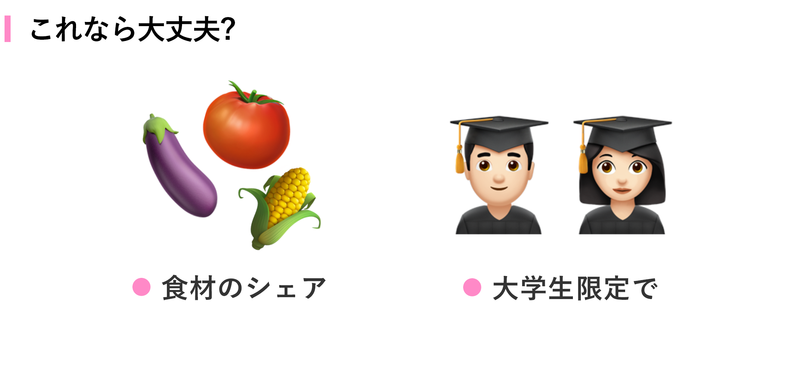

改善中
友人へのインタビューと考察（1回目）
今回のユーザーインタビューの目的は、1人暮らしの人が料理においてどんな課題を抱えているのか調査することでした。
インタビューした際、友人は「料理は楽しいが、食材や料理が余って悪くなってしまうことがストレス」と話していました。
そこで、「食材か調理後の料理を消費出来たら、友人は料理を楽しむことが出来るのではないか？」と考えました。
もっと深掘りをして質問したところ、「まずいと思われたら嫌だから人に料理をあげたくない」「マッチングするなら同年代以外は難しい」という友人の気持ちを引き出すことができました。

そこで、「大学生」という世代に絞りこみ、料理ではなく「食材」のシェアをすることで「食品の余り」をなくすことが出来るのではないか？と考え今回のアプリを作りました。
友人に試してもらって（1回目のユーザーテスト）
今回のユーザーテストの目的は、価値仮説の検証とUIをどのように触るか確認することでした。
母親に自宅のキッチンで実際に使ってもらった結果、以下の課題が見つかりました。
- レシピに火加減が書いていないから困る
- スタートボタンを押したのかわからないUI
- 「固ゆで」で作ったたまごが半固ゆでだった
XDのプロトタイプで上記の仮説を反映させたものを作り、2回目のユーザーテストを行いました。